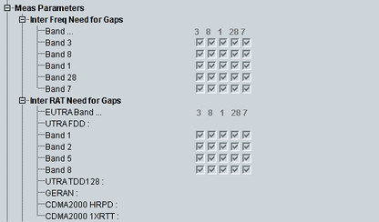
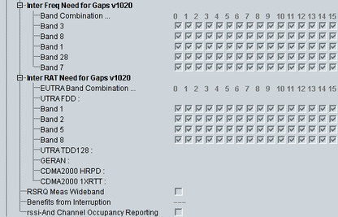

This section indicates the UE capabilities for channel measurements, for example on other operating bands or on other radio access technologies (RAT).


Indicates the need for downlink measurement gaps when using a certain E-UTRA band and measuring a certain E-UTRA band. Each column corresponds to a specific used E-UTRA band, each row to a specific measured E-UTRA band.
Remote command:Indicates the need for downlink measurement gaps when using a certain E-UTRA band and measuring on a supported band of another RAT. Each column corresponds to a specific used E-UTRA band, each row to a specific measured band of another RAT.
Remote command:Indicates the need for downlink measurement gaps when using a certain E-UTRA band combination for carrier aggregation and measuring a certain E-UTRA band. Each column corresponds to a specific used band combination, each row to a specific measured E-UTRA band.
Remote command:Indicates the need for downlink measurement gaps when using a certain E-UTRA band combination for carrier aggregation and measuring on a supported band of another RAT. Each column corresponds to a specific used band combination, each row to a specific measured band of another RAT.
Remote command:Support of RSRQ measurements with wider bandwidth.
Remote command:Indicates whether the UE power consumption can be reduced by allowing the UE to cause interruptions to serving cells. The information applies to measurements of deactivated SCell carriers for measurement cycles of less than 640 ms, as specified in 3GPP TS 36.133.
Remote command:Indicates whether the UE supports RSSI and channel occupancy measurements for LAA.
Remote command: